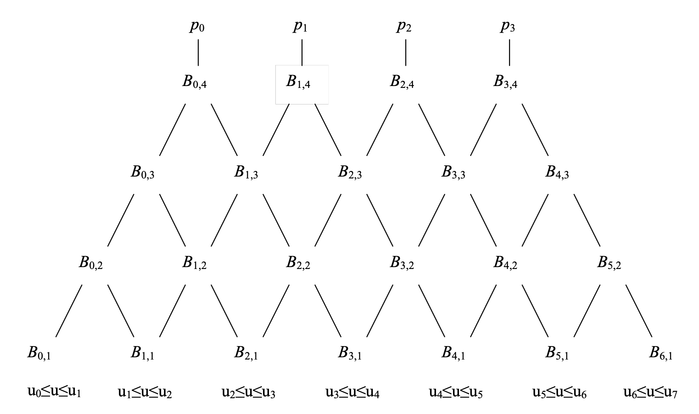

B-Spline 101 (Some Important Things to Know About B-Splines)
There are four key concepts about every B-Spline curve--the degree, control points, blending functions, and knot vectors.
The degree of a spline curve is the degree of the polynomials that define the curve segments. The order, $d$ (confusingly), is one greater than the degree. So, for example, if we want a spline based on cubic polynomials then the order will be 4 while the degree is 3.
There are $n + 1$ control points, $p_0,...,p_n$. At any given point on the curve, only some local control points will influence the curve. Specifically, the order of the curve is equal to the number of control points affecting any point on the curve.
A knot vector is a a non-decreasing sequence of real numbers called knots. So if the knot vector is $(u_0,u_1,...,u_m)$ then $u_i\leq u_{i+1}, 0\leq i \lt m$. As we'll shortly see in the Cox-de Boor recursions, the knot vector partitions the parameter domain (the range of $u$) and controls how the piecewise polynomial blending functions are defined and joined together.
How to Compute A B-Spline Curve?
The definition of a B-Spline curve is given by:
$$P(u) \;=\; \sum_{k=0}^n p_k\,B_{k,d}(u)$$where d is the order of the curve and the blending functions $B_{k,d}(u)$ are defined by the recursive Cox–de Boor equations:
$$ B_{k,1}(u) = \begin{cases} 1 & \text{if } u_k \le u \le u_{k+1},\\ 0 & \text{otherwise}, \end{cases} $$ $$ B_{k,d}(u) = \frac{u - u_k}{u_{k+d-1} - u_k}\;B_{k,d-1}(u) \;+\; \frac{u_{k+d} - u}{u_{k+d} - u_{k+1}}\;B_{k+1,d-1}(u), \quad d > 1. $$It is useful to look at the recursion tree to get a better understanding of the formula. In the following example, the tree corresponds to a four control point cubic B-Spline. It shows the four control points, together with their respective weights, i.e. the blending functions, at the top. At the bottom it shows the knot ranges where each $B_{1}$ is defined.
For this tree the generated curve will be in the parameter range $u_3\leq u\leq u_4$, since this is the only parameter range where all four $(d=4)$ of the control points have influence.